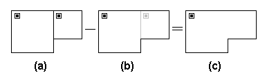

You modify the positions or shapes of walls by adding and deleting wall sections. For example in the following figures, if you want to modify the zone in figure (a) to obtain the zone in figure (d), you would first add the dark line in figure (b) then delete the dark line in figure (c).
When modifying walls you may need to move or delete other icons. For example in the following figures, to create drawing (c) from drawing (a), you would delete the lighter line and the lighter zone icon from figure (b). You must delete one of the two zone icons, or you will end up with two zone icons within the same enclosed wall area. This is not permitted, and you will receive a message indicating a zone definition error.
